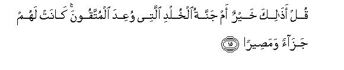
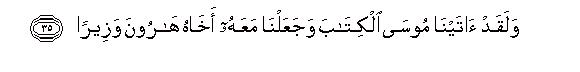

بسم الله الرحمن الرحيم
Sayyid Abul Ala Maududi - Tafhim al-Qur'an - The Meaning of the Qur'an
 25.
Surah Al Furqan (The Criterion)
25.
Surah Al Furqan (The Criterion)
The Surah takes its name "Al-Furqan" from the first verse. Though it is symbolic like the names of many other Surahs, it has a close relation to its subject matter.
It appears from its style and subject matter that, like Surah Al- Mu'minun, it was also revealed during the third stage of Prophethood at Makkah. Ibn Jarir and Imam Razi have cited a tradition of Dahhak bin Muzahim that this Surah was revealed eight years before Surah An Nisa. This also confirms our opinion as to its period of revelation. (Ibn Jarir, Vol. XIX, pp. 28-30, and Tafsir Kabir, Vol. VI,p. 358).
The Surah deals with the doubts and objections that were being raised against the Qur'an, the Prophethood of Muhammad (Allah's peace and blessings be upon him) and his teachings by the disbelievers of Makkah. Appropriate answers to each and every objection have been given and the people have been warned of the consequences of rejecting the Truth. At the end of the Surah, a clear picture of the moral superiority of the Believers has been depicted as in the beginning of Surah Al-Mu'minun, as if to say, 'Here is the criterion for distinguishing the genuine from the counterfeit. This is the noble character of those people who have believed in and followed the teachings of the Holy Prophet and this is the kind of people that he is trying to train. You may yourselves compare and contrast this type of people with those Arabs, who have not as yet accepted the Message, and who are upholding "ignorance" and exerting their utmost to defeat the Truth. Now you may judge for yourselves as to which you would like to choose." Though this question was not posed in so many words, it was placed before every one in Arabia in a tangible shape. It may be noted that during the next few years, the practical answer given to this question by the whole nation, with the exception of a small minority, was that they chose Islam.

In the name of Allah, the Compassionate, the Merciful.
[1] Highly blessed1 is He, Who has sent down Al-Furqan2 3 to His servant so that it may be a warner to all mankind.4
[2-3] He to Whom belongs the Sovereignty of the heavens and the earth:5 Who has begotten no son.6 Who has no partner in His Sovereignty.7 Who created each and every thing and then ordained its destiny.8 Yet the people have set up, besides Him, deities, who do not create anything but are themselves created,9 who can neither harm nor help even themselves: who have no power over life or death, nor can they raise up the dead.10
[4-6] Those who have rejected the Message of the Prophet, say, "This (Al-Furqan) is a forgery which this man himself has devised, and some others have helped him at it." What a cruel injustice11 and an impudent lie! They say, "These things are the writings of the ancients which he has got copied down for himself, and then these are recited to him in the morning and evening.'' O Muhammad, say to them, "This has been sent down by Him, Who knows the secret of the heavens and the earth."12 The fact is that He is very Forgiving and Merciful.13

[7-10] They say, "What sort of a Messenger is he that he eats food and moves about in the streets?14 Why has not an angel been sent down to accompany him and threaten (the disbelievers)?15 Or why has not at least a treasure been sent down for him or a garden given to him for (easy) sustenance?"16 And the wicked people say, "You are following a man bewitched."17 Just see what strange arguments they bring forward with regard to you! They have gone so far astray that they cannot charge any thing against you.18 Highly blessed19 is He, Who, if He wills, could give you much more and better things than what they propose for you: (Not one but) many gardens, beneath which rivers flow; and big castles.
[11-14] The fact of the matter is that these people have denied "the Hour"20 21 And for the one who denies the coming of the Hour, We have prepared a blazing Fire. When it will see22 them from afar, they will hear the sounds of its raging and roaring. And when they are chained together and flung into a narrow space therein, they will begin to call for death. (Then it will be said to them:) "Do not call for one death today, but call for many deaths."

[15-16] Ask them "Is this (Fire) better or the everlasting Garden which has been promised to the God-fearing righteous people?" which will be the recompense of their good deeds and the final destination of their journey wherein they will get everything they desire and wherein they will dwell for ever. This is a promise which your Lord has taken upon Himself to fulfill.23
[17] And on that Day (your Lord ) will gather all these people together as well as their deities,24 whom they worship besides Allah. Then He will ask them, "Did you mislead these servants of Mine, or did they themselves go astray?"25

[18-19] They will answer, "Glory be to Thee! We dared not take any guardian besides Thee: (they were misled because) Thou didst give them and their forefathers all the good things of life till they forgot the Admonition, and incurred the punishment."26 Thus will your gods deny all that you are professing today.27 Then you shall neither be able to repel your punishment nor shall get any help from anywhere; and whoso is guilty. of iniquity''28 among you, We shall make him taste a severe torment.

[20] O Muhammad, all the Messengers whom We sent before you also ate food and moved about in the streets.29 In fact, We have made you all a means of test for one another.30 Will you show patience?31 for your Lord sees everything.32

[21-30] Those people, who have no fear of coming before Us, say,"Why should not the angels be sent down to us?33 Or else we should see our Lord."34 Great arrogance have they assumed in regard to themselves,35 and have transgressed all limits in their rebellion. The Day, when they will see the angels, will not be a day of rejoicing for the criminals;36 they will cry out, "May Allah save us!" Then We shall turn . to what they had done and render it vain like scattered dust.37 (On the contrary) only those who have deserved the Garden, will have a good abode on that Day and a cool place for midday rest.38 On that Day, a cloud will appear rending the sky and the angels will be sent down rank after rank. The real Kingdom on that Day will belong only to the Merciful,39 and it will be a very hard Day for the disbelievers. The unjust man will bite at his hand and say, "Would that I had stood by the Messenger! O, woe to me! Would that I had not chosen so and so for a friend! For it was he, who had deluded me to reject the Admonition which had come to me. Satan has proved very treacherous to man."40 And the Messenger will say, "O my Lord, my people had made this Qur'an the object of their ridicule."41
[31] O Muhammad, in this very way We have made the criminals the enemies of every Prophet,42 but your Lord suffices for you as your Guide and Helper.43
[32-34] The disbelievers say, "Why has not the entire Qur'an been sent down to this man all at once?"44 Well, this has been done to impress it deeply on your mind,45 and (for the same object) We have sent it down piecemeal by degrees. And (there is another wisdom in this : ) whenever they brought to you an odd thing (or a strange question), We sent its right answer to you in time and explained it all in the best manner,46 those who are going to be driven to Hell upon their faces, have taken an utterly wrong stand and their way is most erroneous!47

[35-40] We gave Moses the Book48 and appointed his brother Aaron as his counselor: then We said to them, "Go to the people who have treated Our Revelations as false."49 So We annihilated those people utterly. The same was the case with the people of Noah when they charged the Messenger with imposture.50 We drowned them and made them a sign of warning for entire mankind, and We have prepared a painful chastisement for the unjust.51 Likewise were destroyed the `Ad and the Thamud and the people of the Rass,52 and many a generation in between. We admonished each one of them by citing the examples (of those who were destroyed before them) and ultimately annihilated all of them. Surely, these people have passed by that habitation on which was rained an evil rain;53 have they not seen its ruins ? But they do not expect another life in the Hereafter.54
[41-42] When these people see you, they scoff at you, (saying), "Is this the man whom Allah has sent as His Messenger? He had almost led us astray from our gods, had we not remained firm in our faith with regard to them."55 The time is not far when they will see the torment and realize who had strayed far from the truth.
[43-44] Have you ever considered the case of the person who has made his lust his god?56 Can you take the responsibility of guiding such a one aright? Do you think that most of them hear or understand? They are only like the cattle; nay, even worse than the cattle.57
[45-46] Have you not seen how your Lord lengthens out the shadow? Had He willed, He would have made it constant, but We have made the sun its pilot;58 then (as the sun climbs up), We roll it up little by little towards Ourselves.59
[47] And it is Allah Who has ordained the night as a garment60 for you, and the sleep as a repose of death, and the day as the time of return to life.61
[48-50] And it is He, Who drives the winds to be the harbingers of His mercy: then He sends down pure water62 from the sky so that He may revive the dead land, and quench the thirst of many of His creatures from among beasts and men.63 We present the same phenomenon over and over again before them64 so that they may learn a lesson from it; but most people decline to adopt any other attitude than of disbelief and ingratitude.65
[51-54] Had We willed, We would have raised up a separate Warner in each habitation.66 So, O Prophet, do not yield to the disbelievers, but wage a Jihad against them with this Qur'an.67
And it is He, Who has let loose the two seas, one palatable and sweet, the other bitter and salty, and there is a partition between them, which is an insurmountable barrier.68
And it is He, Who created man from water: then from him He caused two kinds of kindred, by blood and by marriage:69 your Lord is All Powerful.
[55] Yet they worship, instead of Allah, those who can neither benefit them nor harm them: more than this, the disbeliever has become a helper of every rebel against his Lord.70
[56-57] O Muhammad, We have sent you only to proclaim good tidings and to give warning.71 Tell them, "I do not ask of you any recompense for this work: I only ask of the one, who will, to adopt the way of his Lord."71a
[58-59] O Muhammad trust in that Allah Who is Ever-Living and will never die' Glorify Him with His praise, for He alone is sufficient to be aware of the sins of His servants. In six days He created the earth and the heavens and all that is between them; then He established Himself on the "Throne" (of the Kingdom of the universe).72 (He is) the Merciful: as to His Glory, ask the one who knows.
[60] When it is said to them. "Prostrate yourselves before the Merciful," they retort, "What is the Merciful? Would you have us prostrate ourselves before whomsoever you will?"73 And this invitation only helps to increase their hatred all the more.74
[61-62] Highly blessed is He, Who has made fortified spheres75 in the heavens and has set in it a "lamp"76 and a shining moon. He it is Who caused the night and the day to succeed each other so that everyone who desires may learn a lesson or become grateful.77
[63-73] The (true) servants of the Merciful are those78 who walk humbly on the earth79 who, when the ignorant people behave insolently towards them, say,"Peace to you"80 who pass their nights in prostrating themselves and standing before their Lord81 who pray, "Our Lord, save us from the torment of Hell, for its torment is killing: it is an evil abode and an evil resting place"82 who, when they spend, are neither extravagant nor miserly but keep the golden mean between the two (extremes):83 who do not invoke any god but Allah nor kill a soul, which Allah has forbidden, unjustly, nor commit adultery.84 He who does this shall be punished for his sin, and his torment shall be doubled on the Day of Resurrection,85 and he shall abide in a state of ignominy, except the one who may have repented (after those sins) and have believed and done righteous works,86 for then Allah will change his evil deeds into good deeds, and He is very Forgiving and Merciful. In fact, the one87 who repents and does righteous deeds, returns to Allah as one rightly should.88 (And the servants of the Merciful are those:) who do not bear witness to falsehood89 and who; if they have ever to pass by what is vain, pass by like dignified people90 who do not behave like the blind and the deaf, when the Revelations of their Lord are recited to them for admonition.91
[74-76] Those who pray, "Our Lord, bless us with wives and children, who may be the comfort of our eyes,92 and make us leaders of the righteous."93 Such are the people who will be rewarded with high palaces for their fortitude,94 95 wherein they will be welcomed with due respect, honor and salutations and wherein they will live for ever: what an excellent abode and what an excellent resting place!
[77] O, Muhammad, tell the people, "My Lord does not care at all if you do not invoke Him.96 Now that you have denied (His Revelations), you will soon be awarded such a punishment which you will never be able to avoid."
1The Arabic word tabaraka is very comprehensive, and cannot be understood fully and completely by "highly blessed", not even by a sentence. However, its meanings may be grasped by keeping in view the remaining portion
of vv. 1-2. Here it has been used to convey the following meanings:
(1) He is the most Beneficent: that is why He has bestowed the great blessing of Al-Furqan by degrees on His servant so that he may admonish all mankind.
(2)He is the most Exalted and Great: for the Sovereignty of the heavens and the earth belongs to Him.
(3) He is the most Holy, Pure and Perfect: He is free from every tinge of shirk and has neither a partner in His Godhead, nor needs a son to succeed Him; for He is Ever-Lasting.
(4) He is the Highest and the Most Supreme in rank: the Kingdom and the Dominion wholly and solely belong to Him, and there is none who has any share in His Authority and Powers.
(5) He is the sole Creator of the universe and has created each and everything in it and predetermined its destiny. For further details, see E.N. 14 of AI Mu'minun and E.N. 19 of AI-Furqan.
2Al-Furqan: The Criterion. The Qur'an has been called Al-Furqan because it is the Criterion for judging right and wrong virtue and vice, truth and falsehood.
3The word nazzala implies revelation of the Qur'an piecemeal by degrees. The wisdom of this introductory remark will be explained in the study of verse 32, where the objection of the disbelievers of Makkah -as to why the Qur'an has not been sent down all at once-has been dealt with
4“..... warner to all mankind": To warn all mankind of the evil consequences of their heedlessness and deviation. The warner may be AI-Furgan or the Holy Prophet to whom it was revealed. In fact, both were the warners because they were both sent for one and the same purpose. The message of the Qur'an and Prophethood of Muhammad (Allah's peace and blessings be upon him) were not meant for any particular country but for the whole world; and not for their own time, but for all times to come. This has been stated at several places in the Qur'an; for instance: "O Muhammad, say, O mankind, I am a Messenger to all of you from Allah ....." (Al-A`raf: 158); "..... and this Qur'an has been revealed to me so that I should thereby warn you all and whom it may reach." (Al An'am: 19); "We have sent you only as a bearer of good news and as a warner to all mankind." (Saba: 28); and "We have sent you as a mercy to all mankind." (Al Anbiya': 107) The Holy Prophet himself has stated this clearly in the Hadith; for instance, he said: "I have been sent to all men-the red and the black." "Before me a Prophet was sent only to his own people, but 1 have been sent to all mankind." (Bukhari, Muslim). "I have been sent to all mankind, and I am the Last of the Prophets." (Muslim).
5Another translation may be: "To Him belongs the Sovereignty of the heavens and the earth." That is, He alone has an exclusive right to it, and no one else has any right to it nor any share in it.
6That is, "He has neither any relation of direct parenthood to anyone, nor has He taken anyone as a son. Therefore, none else in the universe is entitled to worship. He is Unique and there can be no partner in His Godhead. Thus all those who associate with Him angels or jinns or saints as His offspring, are ignorant. Likewise, those who believe that some one, is His "son", are also ignorant. They have no true conception of the Greatness of Allah and consider Him to be weak and needy like human beings, who require some one to become their inheritor. It is sheer ignorance and folly." For further details, see E.N.'s 66 to G8 of Surah Yunus .
7The Arabic word mulk means Sovereignty, Supreme Authority, and Kingship. Thus the sentence will mean: "Allah is the Absolute Ruler of the whole universe and there is none other who may have any right to authority; therefore He alone is God." For whenever a man takes anything else as his lord, he does so under the presumption that his deity has the power to do good or bring harm and make or mar his fortune; nobody will like to worship a powerless deity. Now when it is recognized that none but Allah has the real power and authority in the universe, nobody will bow before anyone other than Him in worship, nor will sing anybody else's hymns, nor commit the folly of bowing in worship before any thing else except his real God, or recognize any other as his ruler, because "To Allah belongs the Sovereignty of the heavens and the earth and to Him alone."
8There may be other translations of this also: "He has ordained it in due proportion"; or "He has appointed an exact measure for everything." But no translation can convey its real meaning, which is: "Allah has not only created everything in the universe but also determined its shape, size, potentialities, characteristics, term of existence, the limitations and extent of its development and all other things concerning it. Then, He has created the means and provisions to enable it to function properly in its own separate sphere."
This is one of the most comprehensive verses of the Qur'an with regard to the Doctrine of Tauhid. According to Traditions, the Holy Prophet himself taught this verse to every child of his family as soon as it was able to speak and utter a few words. Thus, this verse is the best means of impressing the Doctrine of Tauhid on our minds, and every Muslim should use it for educating his children as soon as they develop understanding.
9The words are comprehensive and cover all the false gods whom the mushriks worship whether they are angels, jinns, Prophets, saints, the sun, the moon, the stars, trees, rivers, animals etc., which have been created by Allah, or those which have been created by man, as the idols of stone, wood, etc.
10That is, "Allah has sent down Al-Furqan on His servant so that he may invite the people to the Truth, which they have forsaken due to heedlessness and waywardness, and warn them of the evil consequences of their folly. The Furqan is being revealed piecemeal so that he may distinguish right from wrong and the genuine from the counterfeit."
11Another translation may be: "a great injustice."
12This is the same objection which the modern orientalists have raised against the Qur'an, but strange as it may seem, no contemporary of the Holy Prophet ever raised such an objection against him. Nobody, for instance, ever said that Muhammad (Allah's peace be upon him) as a boy had met Buhairah, the monk, and had attained religious knowledge from him, nor did anybody claim that he had obtained all that information from the Christian monks and Jewish rabbis during the trade journeys in his youth. In fact, they knew that he had never traveled alone but in the caravans and if they said such a thing, it would be refuted by hundreds of their own people from the city.
Then, one could ask, if he had gained all that knowledge from Buhairah when he was about 12, and during trade journeys when he was 25, why did he keep it secret from the people till he became 40? whereas he did not leave his country even for a single day, but lived for years among his own people in the same city. That is why the people of Makkah dared not bring such an impudent and baseless charge against him. Their objections related to the time when he claimed to be a Prophet of Allah and not to the time preceding that claim. Their argument was like this: "This man is illiterate and cannot obtain any knowledge through books. He has lived among us for forty years, but we have never heard from him anything that might have shown that he had any acquaintance with what he is preaching; therefore he must have had the help of other people who copied these things from the writings of the ancients for him: he learns these things from them and recites them as Divine Revelations: this is a fraud." So much so that according to some traditions, they named some of his "helpers", who were the people of the Book, were illiterate and lived in Makkah. They were: (1) Addas, a freed slave of Huvaitib bin `Abdul `Uzza(2) Yasar, a freed slave of 'Ala bin Al Hadrami, and (3) Jabr, a freed slave of `Amir bin Rabbi`ah .
Apparently this is a weighty argument. For there can be no greater proof of the "fraud" of Prophethood than to specify its source. But it looks strange that no argument has been put forward to refute this charge except a mere denial, as if to say, "Your charge is an impudent lie: you are cruel and unjust to bring such a false charge against Our Messenger; for the Qur'an is the Word of Allah Who knows all the secrets in the heavens and the earth. " Had their charge been based on facts, it would not have been rejected with contempt, for in that case the disbelievers would have demanded a detailed and clear answer. But they realized the strength of the arguments and did not make such a demand. Moreover, the fact that the "weighty" argument failed to produce any doubt in the minds of the new Muslims, was a clear proof that it was a lie.
The enigma is clearly explained if we keep in view the prevalent circumstances
(1) The disbelievers of Makkah did not take any decisive steps to prove their charge, although they could, had there been any truth in their charge. For instance, they could have made raids on the houses of the alleged helpers and on the house of the Holy Prophet himself and taken hold of the whole "material" which was being used in this "fraud", and made it public to expose his Prophethood. And this was not difficult for them because they never hesitated to resort to anything to defeat him, including persecution, as they were not bound by any moral code.
(2) The alleged helpers were not strangers. As they lived in Makkah, everyone knew it well how learned they were. The disbelievers themselves knew that they could never have helped to produce a unique and sublime Book like the Qur'an which had the highest literary excellence and merit. That is why none of them challenged the answer to the charge. That is why even those people, who did not know them, considered this frivolous. Then if the alleged helpers were such geniuses, why did they not claim to be prophets themselves?
(3) Then, all the alleged helpers were freed slaves who were attached"to their former masters even after their freedom according to the customs of Arabia; therefore they could not have become willing accomplices of the Holy Prophet in this "fraud" of false prophethood because their former masters could have coerced them to expose it. The only reason for them to help the Holy Prophet in his claim could have been some greed or interest which, under the circumstances, could not even be imagined. Thus, apparently there was no reason why they should have offended those whose protection and patronage they needed and enjoyed, and become accomplices in the "fraud".
(4) Above all, all these alleged helpers embraced Islam. Could it be possible that those very persons, who had helped the Holy Prophet to make his "fraud" successful, could have possibly become his devoted followers? Moreover, if, for the sake of argument, it be admitted that they helped him, why was not any of them raised to a prominent rank as a reward of his help? Why were not 'Addas and Yasar and Jabr exalted to the same status as were Abu Bakr and 'Umar and Abu 'Ubaidah? Another odd flung is that if the "fraud" of prophethood was being carried on with the help of the alleged helpers, how could it remain hidden from Zaid bin Harithah, 'AIi bin Abi Talib, Abu Bakr and other people, who were the Holy Prophet's closest and most devoted Companions? Thus the charge was not only frivolous and false, but it was also below the dignity of the Qur'an to give any answer to it. The charge has been cited merely to prove that those people had been so blinded by their opposition to the Truth that they could say anything.
13"... He is very Forgiving and Merciful" is very meaningful here. It means that Allah is giving full respite to the enemies of the Truth, for He is "Forgiving and Merciful"; otherwise He would have sent down a scourge to annihilate them because of the false charges they were bringing against the Messenger. It also contains an admonition, as if to say, "O unjust people! if even now you give up your enmity and obduracy and accept the Truth, We shall forgive your previous misdeeds. "
14That is, "He cannot be a Messenger of Allah because he is a human being like us. Had Allah willed to send a Messenger, He would have sent an angel, and f at all a human being was to be sent, he should have been a king or a millionaire, who would have resided in a castle and been guarded by attendants. A Messenger could not be an ordinary person who has to move about in the market places like the common people, for it is obvious that such a human Messenger cannot attract the attention of the people. In other words, they thought that a Messenger was not meant to guide the people to the right path but to coerce them to obedience by show of worldly power and grandeur. For further details, see E.N. 26 of Al-Mu'minun.
15That is, "If a human being was to be sent as a Messenger, an angel should have been appointed to accompany him to proclaim: `If you do not believe in him, 1 will scourge you." But what son of a Messenger is he, who has to suffer from abuse and persecution?"
16That is, "If nothing else, Allah should at least have made extraordinary arrangements for his livelihood. But this man has no treasure and no gardens; yet he claims to be a Messenger of the Lord of the universe."
17The disbelievers of Makkah made the false propaganda against the Holy Prophet that he had been bewitched by some jinn or by the sorcery of an enemy or by the curse of some god or goddess for his insolence. But it is strange that they also admitted that he was a clever man who could make use of extracts from the ancient writings for the sake of his "prophethood", could practice sorcery and was also a poet.
18As these objections were frivolous and meaningless like others, the Qur'an has ignored them, saying, "Your objections are irrelevant, unreasonable and void of sense. You bring no sound argument to prove your doctrine of shirk, or to refute the Doctrine of Tauhid put forward by him, whereas the Messenger gives such proofs of the Doctrine of Tauhid that you cannot refute them except by saying, 'He is bewitched'. The same is true of the doctrine of the life-after-death and of the moral system of the Qur'an, which has produced men of high character. You cannot deny these things; you reject them, saying, "He is a human being like us, etc.”
19Here again the word tabaraka has been used and in the context it means: "Allah has full control over everything and has unlimited powers: if he wills to favor somebody, He can do so as and when He wills without let or hindrance. "
20The word As-Sa'at, meaning the Time or the Hour, has been used in the Qur'an as a term for the promised Hour of Resurrection, when all human beings of all ages will be raised from the dead and gathered together before Allah Almighty to account for their beliefs and deeds, right or wrong, and rewarded or punished accordingly.
21That is, "The objections they are raising are not due to the reason that they doubt the authenticity of the Qur'an on some rational ground, or that they do not believe in you for the reason that you eat food and walk about in the streets like the common people, or that they did not accept your Message of Truth only because you were not escorted by an angel, or were not given a treasure. But the real reason why they are putting forward all sorts of absurd arguments to reject your Message, is that they do not believe in the life-after-death, and this denial has made them free from all moral obligations. For when one denies the life-after death, there remains no need for him to consider and decide what is true or false, or what is right or wrong, etc. Their argument is like this: 'There is going to be no life after this one on the earth when we will be called to account for our deeds before God. Death will be the end of everything, and it will therefore make no difference whether one was a worshiper of God or a disbeliever or a mushrik or an atheist When the ultimate end is to become one with the dust, there is no need of judging what is right and what is wrong except by the criterion of "success" and "failure" in this life'. Those who deny the Hereafter also see that worldly success or failure does not entirely depend upon one's faith or conduct; nay, they very often see that the righteous and the wicked persons meet with the same end irrespective of their faith for which there is no ordained punishment or reward in this life; one righteous person may be living a life of hardship while another enjoying all the good things of life; one wicked person may be suffering for his misdeeds while the other enjoying a life of pleasure and plenty. As such, as far as the worldly consequences of adopting a particular moral attitude are concerned, the disbelievers in the Hereafter cannot be satisfied whether it is right or wrong. In view of this, those who deny the Hereafter, do not see any need to consider an invitation to faith and morality even if it is presented in a most forceful way."
22"The Fire will see them" The words used in the Text may be metaphorical, or they may mean that the Fire of Hell will be endowed with the faculties of seeing, thinking and judging.
23Literally: "It is a promise whose fulfillment can be demanded (from Allah)".
Here one ma ask the question: How can the promise of the Garden and the threat of the Fire produce any effect on the attitude of a parson who denies Resurrection and the existence of Paradise and Hell? In order to understand the wisdom of this method of admonition, one should keep in view that it is meant to appeal to the self-interest of an obdurate person, who does not otherwise listen to such arguments. This is, as if to say, "Even if, for the sake of argument, there is no proof of the reality of the life-after-death, there is also no proof that such an event will not occur at all, and there is a possibility for both. In the latter case, the Believer and the disbeliever both will be in one and the same position, but if there is life in the Hereafter, as the Prophet asserts, then the disbelievers will be doomed to utter ruin". Therefore, such an approach breaks the stubbornness of the disbelievers and proves to be highly effective when the entire scene of Resurrection gathering of the people, their accountability and of Hell and Heaven is presented in a vivid manner as if the Prophet had himself seen it with his own eyes. Fur further explanation, see Ha Mim Sajdah: 52 and E. N. 69 thereof, and A I-Ahqaf: 10.
24Here, deities do not mean idols but the angels, the prophets; the saints, the martyrs and the pious men, whom the mushriks of different communities have made their deities.
25Such dialogues between Allah and the gods of the disbelievers occur at several places in the Qur'an. For instance, in Surah Saba it has been stated: "On the day when He will gather them all together, He will ask the angels, 'Did these people worship you?' They will answer, `Glory be to Thee! Thou art our Patron and not they: they in fact worshiped the jinns (that is, satans); most of these believed in them." (vv. 40-41). Similarly in Surah Al-Ma'idah, it is said:" And when Allah will say "O Jesus, son of Mary, did you ever say to the people: `Make me and my mother gods instead of Allah?' He will answer, `Glory be to Thee ! It did not behoove me to say that which I had no right to say...I told them only that which Thou didst bid me: 'Worship Allah, Who is my Lord as well as your Lord'." (vv. 116, 117).
26That is, "They were mean people: You gave them all the provisions of life so that they may show gratitude to You, but they became ungrateful and ignored all the admonitions given by the Prophets. "
27That is, "On that Day your religion, which you now believe, to be true. will prove to be false and even your gods, whom you yourselves have set up,' will declare it to be a lie; for none of them ever asked you to make them your deities and worship them as such. Consequently, instead of interceding on your behalf; they will bear witness against you."
28"... who will be guilty of iniquity ...": " .... who will be unjust to the Reality and the Truth and guilty of disbelief and shirk "The context shows that those who reject the Prophet and set up other deities instead of Allah and deny life in the Hereafter, are guilty of zulm (iniquity).
29This is an answer to the objection of the disbelievers of Makkah that Muhammad (Allah's peace be upon him) could not be a Messenger of Allah because he ate food and moved about in the streets. They have been told that all the Messengers of Allah who came before Muhammad (Allah's peace be upon him)like Noah, Abraham, Ishmael, Moses and many others whom they knew and acknowledged as Prophets and Messengers of Allah also ate food and walked about in the streets. Nay, even Prophet Jesus, son of Mary, himself, whom the Christians had made the son of God (and whose image had also been placed in the Ka`bah by the disbelievers of Makkah) ate food and walked about in the streets like a common man even according to the Gospels themselves.
30It is obvious that the Messenger and the Believers were a test for the disbelievers as to whether they would believe even after hearing the Divine Message and seeing their pure character. On the other hand, the disbelievers were a test for the Messenger and his followers in the sense that they were a means of proving and trying their true Faith by their persecution. For it is this test alone which helps to discriminate the true Believers from the hypocrites. That is why, at first, only the poor arid the helpless but sincere people embraced Islam. Had there been no persecution and hardships but prosperity, wealth and grandeur, the worshipers of the world and the selfish people would have been the first to embrace Islam.
31That is, "Now when you have understood the wisdom of the test by persecution, it is hoped that you will endure all kinds of hardships without complaint, and willingly undergo the persecutions that are inevitable."
32It probably means two things: First, the way your Lord is conducting your affairs, is according to His will and nothing that happens is without His knowledge. Second, He is fully aware of your sincerity and righteousness in serving His cause under all kinds of hardships. You should therefore rest assured that you will have your full reward. He also sees the persecution and iniquity of the disbelievers; therefore they will not escape the consequences of their wickedness.
33That is, "If Allah had really intended to convey His Message to us, He would not have chosen a prophet and sent an angel only to him, but to each one of us individually with the guidance, or He should have sent a deputation of angels to appear before the people with the Message". The same objection has been stated in Surah Al-An`am thus: "When a Revelation comes before them, they say, `We will not believe in it unless we are given the like of what has been given to the Messengers of Allah.' Allah knows best whom to entrust with His Mission and how it should be enforced." (v. 124) appeal .
34That is, Allah Himself should appear before us and make the appeal.
35Another translation could be: "They have formed a very high opinion of their own selves."
36This very theme has been expressed in much greater detail in Al An'am: 8, Al-Hijr: 7-8 and 51-64, and also in Bani Isra`il: 90-95.
37For explanation, see Ibrahim: 18 and E. N.'s 25, 26 thereof.
38In contrast to the miserable plight of the disbelievers on the Day of Resurrection, the Believers will be protected from the hardships of that Day; they will be treated with honor and will have a blissful place for midday rest. According to a Tradition, the Holy Prophet said: "I declare on oath by Allah, in Whose hand is my life, that the long, horrible Day of Resurrection will be made very short and light for a Believer, as short and light as the time taken in offering an obligatory Prayer." (Musnad Ahmad).
39That is, "On that Day all other kingdoms, which deluded man in the world, will come to an end, and there will be only the Kingdom of Allah, Who is the real Sovereign of the universe. In Surah Mu'min: 16, the same thing has been stated thus: "On that Day when all the people will stand exposed, and nothing of them will be hidden from Allah, it will be asked, `Whose is the Sovereignty today?' The response from every side will he: `Of Allah, the Almighty'." According to a Tradition, the Holy Prophet said, "Allah will take the heavens in one hand and the earth in the other, and will declare: `I am the Sovereign: I am the Ruler. Where are the other rulers of the earth? Where are those tyrants`? Where are the arrogant people?" (Musnad Ahmad, Bukhari, Muslim, and Abu Da'ud, with slight variations).
40"Satan has proved very treacherous to man" may also be a part of the disbelievers' lament, or it may be a remark by Allah, in which case the meaning will be: "And Satan is indeed the one who always deceives man."
41The Arabic word mahjur is capable of several meanings. As such, the sentence may mean:" "these people did not regard the Qur'an as worthy of their consideration: they neither accepted it nor followed it"; or "They considered it to be a nonsense or the delirium of insanity: or "They made it the target of their ridicule and mockery."
42That is, "It is not a new thing that the disbelievers have become your enemies, for it has always been so with all the former Prophets and Messengers. (See also Al-An'am: 112-113). This is inevitable because it is Our Law that the criminals will always oppose the Truth. You should, therefore, pursue your mission with full confidence and determination without expecting any immediate results.
43"Guidance" does not only imply bestowing of the knowledge of the Truth, but it also means giving the right guidance at the right time to guide the Islamic Movement on the right lines and to defeat the strategy and scheme of the enemies of Islam "Help" means all kinds of moral, spiritual and material help to the followers of the Truth in their conflict against falsehood. Thus, Allah is All Sufficient for the righteous people and they need no other support provided they have full faith in Allah and fight falsehood with all their energies and strength.
This meant to encourage the Holy Prophet, otherwise the previous assertion would have been very discouraging without this. It meant to say, "Even :f the unbelievers have become your enemies, you should continue your mission, for We shall guide you in every stage and situation and help you against them. We shall defeat all the schemes of your enemies and help you in every way in your conflict with falsehood. We shall provide you with material means also, but you should trust in Us and exert your utmost against falsehood."
44As the disbelievers of Makkah considered this objection to be very strong, they repeated it over and over again. The Qur'an also has cited it with its answer at several places; for instance, see E.N.'s 101-106 of Surah An-Naml and E.N. 119 of Bani Isra'il. Their question implied: "Had the Qur'an been really the Word of Allah, it would have been sent as a complete book all at once; for Allah has the knowledge of everything and every human affair. Thus it is obvious that nothing is being sent down from above; but this man himself fabricates all its themes or gets these from other people or other books.
45Another translation can be: "So that by it We may strengthen your heart and imbue it with courage." The words are comprehensive and imply both the meanings. This concise sentence contains the following explanation why the Qur'an was revealed piecemeal by degrees:
(1) So that the Holy Prophet may commit it to memory perfectly and recite it to his people, who are illiterate, rather than present it in a written form.
(2) So that its teachings and messages may be impressed deeply on the minds.
(3) So that the way of life it teaches, may be followed with complete conviction, which would not be possible if all the Commandments and the whole system of life had been sent down all at once.
(4) So that the hearts of the Prophet and his followers may be imbued with courage during the conflict between the Truth and falsehood. This required that the Divine Guidance and messages of encouragement should be revealed as and when needed according to the practical situation. Obviously, this could not have been possible if these had been sent down all at once. This also showed that Allah had not left His Messenger alone amidst persecution to counter all sorts of resistance and opposition after appointing him to the mission, but He Himself was watching the struggle with concern and guiding His Prophet through every difficulty by direct communion in every critical situation.
46This is yet another point of wisdom of sending down the Qur'an by degrees. Allah did not intend to produce a book on "Guidance" and spread its teachings through the agency of His Prophet. Had it been so the disbelievers would have been justified in their objection as to why the Qur'an had not been sent down as a complete book all at once. The real object of the revelation of the Qur'an was that Allah intended to start a Movement of faith, piety and righteousness to combat disbelief, ignorance and sin, and He had raised a Prophet to lead and guide the Movement. Then, on the one hand, Allah had taken it upon Himself to send necessary instructions and guidance to the leader and his followers as and when needed, and on the other, He had also taken the responsibility to answer the objections and remove the doubts of opponents and give the right interpretation of things which they misunderstood. Thus the Qur'an was the collection of the different discourses that were being revealed by Allah; it was not merely meant to be a code of laws or of moral principles, but a Book, which was being sent down piecemeal to guide the Movement in all its stages to suit its requirements on different occasions. (See also Introduction: The Meaning of the Qur'an, Vol. I, pp. 9- 18).
47That is, "They will be driven towards Hell upon their faces because of their perversion and their perverted thinking."
48Here by "the Book" is not meant the Torah, which was given to Prophet Moses after the exodus from Egypt, but it implies that Divine Guidance which was given to him after his appointment as a Prophet up to the Exodus. It included the orations delivered by him in the court of Pharaoh and also the instructions given to him during his conflict with Pharaoh as mentioned in the Qur'an here and there. Most probably, these things were not included in the Torah; the Torah began with the Ten Commandments which were given to Moses engraved on stone tablets on Mount Sinai after the Exodus.
49"Revelations": The Divine teachings which had reached them through Prophets Jacob and Joseph, and which had been preached to them by the righteous people of Israel for centuries
50They did not charge only Prophet Noah with imposture because he was a man, but, in fact, charged all the Prophets with imposture because they were all human beings.
51That is, a painful chastisement in the Hereafter.
52There is no definite knowledge about "the people of the Raas'' . Different commentators have said different things about them, but nothing is convincing. The only thing that may be said about them is that they were a people who had killed their Prophet by throwing him into or hanging him down a "Rass " (an old or dry well).
53The habitation referred to was that of the people of Prophet Lot, which was destroyed by a rain of stones. The people of Hijaz while traveling to Palestine and Syria, passed by its ruins and heard the horrible tales of its destruction.
54As the disbelievers did not believe in the Hereafter, they looked at these ancient ruins as mere spectators and did not take any warning from them. Incidentally, this is the difference between the observation of a disbeliever and of a Believer in the Hereafter: the former looks at such things as a mere spectator or at the most as an archaeologist whereas the latter learns moral lessons from the same and obtains an insight into the realities beyond this worldly life.
55Obviously there is a contradiction between the question posed by the disbelievers and the assertion made by them about their deities. The question was meant to bring the Holy Prophet into contempt, as if to say, "You are making a claim that is far above your low position." On the other hand, their assertion shows that ,they indirectly admitted the force of the arguments and the high character of the Holy Prophet and were even afraid of the effectiveness and success of his Message, because, according to them, it was going to turn them away from their false gods.
56"...the person who makes his lust his god" is the one who becomes the slave of his lusts and desires. As he serves his lust like the one who warships ' his deity, he becomes as much guilty of .shirk as the one who worships an idol. According to a Tradition, related by Hadrat Abu Hurairah, the Holy Prophet said, "Of all the false gods being worshipped and served, instead of Allah, the worst in the sight of Allah is one's own lust." (Tabarani). For further explanation, see E.N. 50 of Al-Kahf,
The man who keeps his desires under control, and uses his common sense to make decisions, can be expected to come to the right path by making an appeal to his reason even though he might have been involved in shirk or disbelief; for if. he decides to follow the right way he will remain firm and steadfast on it. On the other hand, the man who is the slave of his own lust, is like a ship without an anchor, who wanders about on any path where his lust leads him. He is least bothered about the distinction between the right and the wrong, the true and the false, and has no desire to choose one against the other. And, if ar all, such a person is persuaded to accept the message of Guidance, no one can take the responsibility that he will observe any moral laws.
57"They are only like the cattle" because they follow their lusts blindly. Just as the sheep and cattle do not know where their driver is taking them, to the meadow or to the slaughter house, so are these people also following their leaders blindly without knowing or judging where they are being led-to success or to destruction.. The only difference between the two is that the cattle have no intelligence and will not be accountable as to the place where they are being taken by the driver. But it is a pity that human beings who are endowed with reason, should behave like cattle; therefore their condition is worse than that of cattle.
Incidentally it should be noted that this passage (w . 43, 44) is not meant to dissuade the Holy Prophet from conveying the Message to such people, but it is an indirect warning to the disbelievers of the consequences if they continued to behave like cattle .
58The word dalil has been used in the sense of the "pilot", who is a person trained to take ships safely in or out of a harbor, or along a waterway. The sun has been trade the pilot of the shadow because the lengthening out of the shadow and its being rolled up depends on the rising, declining and setting of the sun.
59"We roll it up......Curselves": "We annihilate it or cause it to disappear", for everything which is annihilated returns to Allah, because everything comes from Elim and returns to Him.
The Qur'an has used the phenomenon of the shadow caused by the sun for two purposes. (fit is taken literally, it is meant to warn the disbelievers that they should learn a lesson from this and should not behave like cattle, as if to say, "If you had considered the benefits of the shadow in regard to your everyday experience, you would have accepted without any hesitation the Doctrine of Tauhid. Had the shadow been constant, there would have been no life en earth, for life depends on the light and heat of the sun. On the other hand, if there had been no shadow at all, the constant heat and light of the sun would have made life impossible. Besides this, if there had been sudden changes in the sun and the shadow, they would not have been able to endure it for long; therefore you should reflect on this phenomenon and understand it well that it has been so ordained by the All-Wise and the All-Powerful Creator so that it always increases or decreases gradually in accordance with fixed natural laws. Thus it is obvious that it could not have come into existence by itself nor produced by blind mechanisms nor functioned so regularly and continuously under many independent gods."
But if it is taken in the metaphorical sense, there is between the lines a subtle suggestion, and it is this: Just as the shadow does not remain in one and the same state, likewise the shadow of disbelief and shirk, which appears to have spread far and wide, will begin to shorten as the "Sun" of Guidance gradually rises; but it requires patience, for Allah never brings about sudden changes.
60The night is a "garment" in the sense that it covers and hides things.
61This verse has three objects:
(1) It provides a proof of Tauhid,
(2) It furnishes a proof of the possibility of life-after-death from everyday human experience, and
(3) It bears the good news that the night of ignorance has come to an end and now the bright day of Knowledge and Guidance has dawned. It is therefore inevitable that those who were sleeping the sleep of ignorance, will sooner or later wake up, but those who have slept the sleep of death, will not wake up and will themselves be deprived of life, while the business of the day will go on thriving even without them.
62That is, such water as is pure and free from all sorts of impurities, germs and poison, which cleanses and washes away filth and becomes a source of life for men, beasts as well as all kinds of plant life.
63This verse also gives proofs of the Doctrine of Tauhid and the Hereafter. Besides, it contains a subtle suggestion that the period of the "drought" of ignorance has been replaced through Allah's mercy by the "blessed rain" of Prophethood, which is showering the life-giving knowledge of Revelation from which many servants of Allah will certainly benefit, if not all .
64"We present...before them" may have three meanings:
(1)"We have cited the phenomenon of rainfall over and over again in the Qur'an in order to make plain to them the Reality."
(2) "We are time and again showing them the wonderful phenomenon of the heat and drought, seasonal winds and clouds, rainfall and its life producing effects."
(3) "We go on changing the system of the distribution of rainfall throughout the , world year after year, so that the same place does not receive the same amount of rainfall every time: sometimes a place is left completely dry, another has more or less of rainfall than usual, while some other is flooded with rain water. They see all these different phenomena with their countless different results in their daily life."
65The verse means to impress that the wonderful system of rainfall is by itself a proof of the existence of Allah, of One Lord of the universe, and of His attributes. Its wonderful distribution during the year and over different parts of the earth is a clear proof that there is an All-Wise Designer. But the obdurate disbelievers do not learn any lesson from it, and persist in their ingratitude, though this has been cited in the Qur'an repeatedly for this purpose.
It is also a proof of the life-after-death, for the disbelievers themselves see and again that rainfall brings to life dead land year after year. This clearly that Allah has the power to bring the dead back to life, but the disbelievers it time proves do not learn any lesson from it and persist in their irresponsible ways.
If verse 48 is taken in the metaphorical sense, the "pure water" of rain will mean the blessings of Prophet hood. Human history shows that whenever this blessing as been sent down, ignorance has been replaced by knowledge, injustice by justice and wickedness by righteousness. The coming of Prophets has always proved to be the harbinger of a moral revolution. But only those who accepted their guidance benefited from it. This is the lesson of history, yet the disbelievers reject it because of their ingratitude.
66That is, "If We had willed, We could have sent a separate Prophet to every habitation but We did not do so, because like the sun, Our Last Prophet suffices to enlighten the whole world."
67The Arabic words Jihad-i-Kabir imply three meanings:
(1) To exert one's utmost for the cause of Islam,
(2) To dedicate all one's resources to this cause, and
(3) To tight against the enemies of Islam on all possible fronts with all one's resources in order to raise high the "Word of Allah". This will include jihad with one's tongue, pen, wealth, life and every other available weapon.
68This phenomenon has been perceived in many places in the sea and on the land that sweet water and bitter water has existed side by side. Turkish Admiral Syedi Ali Ra'is, in his book Mir 'at-al-Mamalik, written in the 16th century, has mentioned a place in the Persian Gulf, where springs of sweet waver exist under the bitter waters of the sea, where he could get drinking water for his fleet. The American Oil Company at first obtained water from the same springs in the Persian Gulf, before they dug up wells near Dhahran for supply of drinking water. Near Bahrain also there exist springs of sweet water at the sea bed from which people have been taking water until quite recently. Besides this apparent meaning which gives a rational proof of Allah's being the One and the only Lord of the universe, the verse contains a subtle suggestion as well: When Allah wills, He can raise up a righteous community from among a large wicked society just as He can cause springs of palatable and sweet water to gush out from under the salty waters of the sea.
69Here the miracle of the birth of man from a mere sperm drop and the procreation of his offspring from man and woman have been cited as a proof of Tauhid. Though both man and woman belong to the same genus, they are two species, having important common human characteristics but different physical structures and psychological traits. It is a proof of Tauhid that the All-Powerful Allah has used this "difference" for making the two as complements and not antagonists. ' It is also the design of the All-Powerful Creator that He is creating sons and daughters in the world in due proportion Then the sons marry and create blood relationships, and the daughters are married and become means of forming new relationships. This process goes on widening to produce families, tribes and nations belonging to the same race and bound by the same civilization.
The verse has also a subtle suggestion: The whole of life is being run on the principle of "difference", for example, the difference between the night and the day, the summer and the winter, etc. Therefore, " O Muslims, you should patiently endure the differences you are having with your opponents for these are certain to produce good results."
70This is a characteristic of the typical disbeliever: he is a helper and defender of all those who are rebels against Allah and an enemy of all those who may he striving to raise Allah's Word and enforce His Law in the world; he is associated directly or indirectly with all the works of Allah's disobedience and opposes and resists in one way or the other every effort that is made to bring people to the path of Allah's obedience and service.
71This verse (56) was meant to comfort the Holy Prophet and to warn the disbelievers who opposed him and obstructed his work, as if to say, "Your duty is only to convey the Message of good news to the people and to warn them of the consequences of disbelief: you are not responsible as to whether they accept .your Message or reject it, or to reward the Believers and punish the disbelievers."
Such words occur in the Qur'an at other places also and are obviously directed to the disbelievers, as if to say, "The Message of the Prophet is meant to reform the people without any tinge of selfishness. As he does not force the people to accept his Message, there is no reason why you should feel offended. If you accept the Message, it will be for your own good, and if you reject it, you will be harming yourselves alone. For after conveying the Message, he is relieved of his duty and responsibility; then the matter will be between you and Us."
Although this is a very simple and clear interpretation of verse 56 (and of similar other verses), yet some people erroneously conclude from it that the only duty and responsibility of the Prophet is to convey the Message and nothing else. They forget that the Qur'an has stressed over and over again that the Prophet is not only a giver of good news to the Believers but he is also their teacher, their lawgiver, judge and guide, a purifier of their morals and a model of life for them, and that every word which he utters is law which they have to obey and follow willingly in all walks of life and for all times to come.
71aFor explanation, see E.N. 70 of Al-Mu'minun.
72For explanation of "Throne", see E.N.'s 41, 42 of Al-A'raf, E.N. 4 of Yunus, and E.N. 7 of Hud.
It is difficult to say what exactly is mean by "six days" Here a "day" thay mean a period of time or an ordinary day of this world. For explanation of the "day", see E.N.'s 11 to 15 of Surah Ha Mim Sajdah.
73This they said due to their arrogance and stubbornness just as Pharaoh had said to Prophet Moses: "What is the Lord of the universe?" For the disbelievers of Makkah were not unaware of the Merciful (Rahman), nor was Pharaoh unaware of the "Lord of the universe". The wording of the verse itself chows that their question about the "Merciful" was not the result of their ignorance of Him but was due to their rebelliousness; otherwise Allah would not have punished them for this but would have informed them politely that He Himself is "Merciful". Besides this, it is well known historically that the word Rahman (Merciful) for Allah had been in common usage in Arabia since the ancient times. Please see also E.N. 5 of As-Sajdah and E.N. 35 of Saba.
74All scholars are agreed that here a `Prostration of Recital' (Sajdah Talawat) has been enjoined, which means that every reader and every hearer must prostrate himself on reciting or hearing the recital of this verse. According to traditions, the one who hears this verse being recited should say: Zadan Allahu, khudu an-anima zada, lil-a`daa-i nufura: "May Allah increase us in humility even as the enemies are increased in their hatred."
75See E.N.'s 8 to 12 of Al Hijr.
76That is, the sun, as mentioned clearly in Surah Nuh: 16: "... and made the sun a lamp."
77The observation and deep consideration of the wonderful phenomenon of the alternation of the day and night is a proof of Tauhid and His Providence so that man may feel grateful to Him and prostrate himself before Him in all humility.
78That is, "Though all human beings are by birth the servants of the Merciful before Whom you have been invited to prostrate yourselves, and which you disdain, his true servants are those who adopt the way of His obedience consciously and develop such desirable characteristics. Then the natural consequences of the prostration are those found in the lives of the Believers and the evil results of rejecting the invitation, those found in your lives." Here attention is being drawn to the two patterns of character and life: first of those who had accepted the Message of the Holy Prophet and were following it, and the second of those who persisted in the ways of ignorance. Here only the prominent characteristics of the true Believers have been cited, and for contrast, the characteristics of the disbelievers have been left to every discerning eye and mind which could see them all around in society and make its own decision.
79That is; "They do not walk haughtily and arrogantly like the tyrants and mischief-makers, but their "gait" is of a gentle, right-thinking and good natured person." "Walking humbly" does not mean walking like a weak or sick person, nor does it imply the gait of a hypocrite who walks ostentatiously to show humility or fear of God. According to Traditions, the Holy Prophet himself used to walk with firm, quick steps. One day Caliph `Umar saw a young man walking slowly like a weak, sick person, and asked him, "Are you ill?" When the man replied in the negative, the Caliph raised his whip, rebuked him and told him to walk like a healthy man. This shows that the "humble gait" is the natural gait of a noble and gentle person and not a gait which shows weakness and undue humility.
In this connection, the first characteristic of the true servants of Allah to which attention has been drawn, is their "gait" This is because the gait indicates the character of an individual. If a man walks in a humble and dignified way, as opposed to a haughty, vain and proud manner, it shows that he is a noble and gentle person. Thus the different "gaits" of the different types of people show what sort of characters they possess. The verse means to imply that the true servants of the Merciful can be easily recognized by their "gait" among the people. Their attitude of Allah's worship and obedience has changed them so thoroughly that it can "be seen at first sight from their "gate that they are noble, humble and good natured people, who cannot be expected to indulge in any mischief. For further explanation, see E.N.43 of Bani Isra'il and E.N 33 of Luqman
80"Ignorant people": Rude and insolent people and not uneducated and illiterate ones. The true servants of the "Merciful" do not believe in "vengeance", even though they may have to deal with the ignorant people who behave rudely and insolently towards them. If they happen to come across such people, they wish them peace and turn away. The same thing has been expressed in AI-Qasas: 55, thus: "And when they hear something vain and absurd they turn away from it, saying, `Our deeds are for us and your deeds are for you: peace be to you: we have nothing to do with the ignorant'." For details see E.N.'s 72 to 78 of Al-Qasas.
81That is, they neither spend their nights in fun and merry-making nor in gossips and telling tales, nor in doing wicked deeds, for these are the ways of the ignorant people. The true servants of Allah pass their nights in worshipping and remembering Him as much as they can. This characteristic of theirs has been brought out clearly at several places in the Qur'an, thus: "their backs forsake their beds and they invoke their Lord in fear and in hope." (As-Sajdah: 16). "These people (of Paradise) slept but little at night, and prayed for their forgiveness in the hours of the morning." (Az-Zariyat: 17, 18). And: "Can the end of the one, who is obedient to Allah, prostrates himself and stands before Him during the hours of the night, fears the Hereafter and places his hope in the mercy of his Lord, be like that of a mushrik;'" (Az-Zumar: 9).
82That is, their worship has not made them vain and proud to presume that they are the beloved ones of Allah and that the Fire of Hell will not touch them. On the other hand, in spite of all their worship and good deeds, they are so tilled with the fear of the torment of Hell that they pray to their Lord to save them from it, for they do not depend upon their own work for success in the Hereafter but upon the mercy of Allah.
83The true servants of Allah adopt "the golden mean" between the two extremes in spending their money. They neither go beyond prudence and necessity in expenditure nor live in wretched 'circumstances in order to save and hoard money but are frugal. This was the characteristic of the followers of the Holy Prophet, which distinguished them from the well-to-do people of Arabia, who were either spend-thrifts in regard to the gratification of their own lusts or niggardly in spending their money on good works.
According to Islam extravagance is: (1) To spend even the smallest amount of money in unlawful ways, (2) to go beyond one's own resources in expenditure even in lawful ways, or to spend money for one's own pleasure, and (3) to spend money in righteous ways not for the sake of Allah but for mere show. On the other hand, one is miserly if one does not spend money for one's own needs and requirements and those of one's family in accordance with one's resources and position, or if one does not spend money for good works. The way taught by Islam is the golden mean between the two extremes. The Holy Prophet has said, "It is a sign of wisdom to adopt the "golden mean" in one's living." (Ahmad, Tabarani).
84The true servants refrain from three great sins: Shirk, murder and adultery. The Holy Prophet himself warned of their gravity. According to 'Abdullah bin Mas`ud, when some one asked him about the worst sins, he replied, (1) "It is to set up someone as equal in rank with Allah, Who has created you, (2) to kill your own child for fear of its sustenance, and (3) to commit adultery with the wife of your neighbour." (Bukhari, Muslim, Tirmizi, Nasa`i, Ahmad). Obviously this is not a complete list of the "heinous sins". But these three instances have been cited because they were most prevalent in the Arab society of those days .
As regards the inclusion of refraining from shirk among the excellences of the true servants, one may ask why it should be presented as virtue before the disbelievers who did not regard shirk as a vice. It is because the Arabs had doubts about the doctrine of shirk even though they appeared to be deeply involved in it. This is amply supported by their history. For instance, when Abraha invaded Makkah, the Quraish did not invoke their idols to save the Ka`bah from him, but they begged Allah to save it. Their contemporary poetry bears sufficient evidence that they regarded the destruction of the "people of the elephant" due to Allah's power and supernatural interference and not due to any help of their idols. The Quraish and the polytheists of Arabia had also come to know that when Abraha reached Ta`if on his way to Makkah, the people of Ta`if had offered him their services to destroy the Ka`bah and had even provided him guides to take him safely to Makkah through the hills, for fear that he might also destroy the temple of "Lat", their chief deity. This event so much offended the Arabs that for years after this they continued , pelting the grave of the chief guide with stones for retaliation. Moreover, the Quraish and the other Arabs attributed their creed to Prophet Abraham and looked upon their religious and social customs and their Hajj rites as part of Abraham's religion. They knew that Prophet Abraham was a worshiper 'of Allah and not of idols. They also had traditions to show as to when they had started idol-worship, and which idol had been brought from where, when and by whom. The fact is that the common Arab did not have much of reverence for his idols. He would even speak insultingly of it and withheld his offerings when it failed to fulfil his wishes and prayers. For instance, there is the story of an Arab who wanted to avenge the murder of his father. He went to the temple of his idol, Zul-Khalasah, and wanted to take an omen. The response came that he should abandon his intention. At this the Arab became furious and cried out: 'O Zul-Khalasah! Had you been in my place, and your father was murdered, you would not have said that the murderers should not be punished." Another Arab took his herd of camels to the shrine of his god, named Sa'd, for seeking its blessings. It was a tall idol which had been smeared with sacrificial blood. On seeing it, the camels became terrified and started running in all directions. The Arab was so filled with rage that he started pelting the idol with stones, shouting, "May God destroy you! I had come to you to seek blessings for my camels, but you have deprived me of all of them." There were certain idols about whose origin filthy stories were current. For instance, the story about Asaf and Na'ilah whose images had been placed at Safa and Marwa, was that they were actually a man and a woman, who had committed adultery inside the Holy Ka`bah and had been turned into stone by God as a punishment. When the deities had such reputation, no worshiper could cherish any reverence for them in his heart. From this one can easily understand that the Arabs did recognize the value of true God-worship deep in their hearts, but, on the one hand, it had been suppressed by ancient customs and ways of ignorance, and on the other, the priestly class among the Quraish had vested interests, who were busy creating prejudices against it among the people. They could not give up idol-worship because such a step would have brought to an end their supremacy in Arabia. That is why, refraining from shirk and worship of One Allah has been mentioned as a mark of superiority of the followers of the Holy Prophet without any fear of contradiction by the disbelievers, for even they in their heart of hearts knew that it was a weighty argument against them.
85This can have two meanings: (1) His punishment will never come to an end, but it will continue being inflicted relentlessly over and over again; and (2) the person who in addition to the sins of disbelief, shirk and atheism, would have committed murders, adultery and other sins, will get separate punishment for rebellion and for each other sin. He will be accountable for each of his major and minor sins none of which will be pardoned. For instance, for each murder and for each act of adultery he will be given a separate punishment, and likewise, there will be a separate punishment for every sin committed by him.
86This is a good news for those people who repented and reformed themselves, for they will have the benefit of the "general amnesty" contained in verse 70. This was regarded as a great blessing by the true servants because very few of those who embraced Islam had been free from those vices during their 'ignorance', and were terrified by the threat contained in vv. 63-69, but this amnesty not only redeemed them but filled them with hope.
Many instances of such people, who sincerely repented and reformed their lives, have been related in the traditions. For instance, Ibn Jarir and Tabarani have related an incident from Hadrat Abu Hurairah, who savs, "One day when 1 returned home after offering the 'lsha prayer in the Prophet's Mosque, I saw a woman standing at my door. I saluted her and walked into my room, closed the door and busied myself in voluntary worship. After a while she knocked at the door. I opened the door and asked what she wanted. She said that she had come with a problem: She had committed zina, had become pregnant, given birth to a child and then killed it. She wanted to know if there was any chance of her sin being forgiven. I replied in the negative. She went back grief-stricken, exclaiming, "Ah! this beautiful body was created for the fire!" The next morning, after the prayer, when I related the night's incident before the Holy Prophet, he said, "You gave a very wrong answer, Abu Hurairah: Haven't you read the Qur'anic verse which says: '(Those) who do not invoke any other deity than Allah...except the one who may have repented (after those sins) and have believed and done righteous deeds' `?" Hearing this from the Holy Prophet, I went out in search of the woman, and had her traced again at the `Isha time. I gave her the good news and told her what the Holy Prophet had said in reply to her question. She immediately tell prostrate on the ground and thanked Allah, Who had opened a way for her forgiveness. Then she offered repentance and set a slave-girl, along with her son, tree." A similar incident about an old man has been related in the traditions. He came before the Holy Prophet and said, "O Messenger of Allah, all my life has passed in sin: there is no sin which I have not committed; so much so that if my sins were to be distributed over the people of the whole world, they would all be doomed. Is there any way out for my forgiveness?" The Holy Prophet asked him, "Have you embraced Islam?" He said, "I bear witness that there is no god but Allah, and that Muhammad is the Messenger of Allah." The Holy Prophet said, "Go back, Allah is All-Forgiving and has the power to change your evil deeds into good deeds." He asked,"Is it about all my crimes and errors?'' The Holy Prophet replied, "Yes, it is about all your crimes and errors." ( Ibn Kathir) .
87It has two meanings: (1) When he has repented sincerely, he will start a new life of belief and obedience to Allah and by His grace and help will start doing good deeds instead of evil deeds that he used to do in his life of unbelief, and his evil deeds will be replaced by good deeds; and (2) Not only will his evil deeds done in the past be written off, but it will also be recorded in his conduct register that he was the servant who gave up rebellion against his Lord and adopted the way of His obedience. Then, as he will feel more and more sorry for his past sins and offer repentance, more and more good deeds will be credited to him; for repenting of one's wrong doing and seeking forgiveness is in itself a good deed. Thus, good deeds will supersede all his evil deeds in his conduct register, and he will not only escape punishment in the Hereafter but, in addition, he will also be blessed with high favors by Allah.
88That is. ultimately everyone has to return to Allah for Allah alone is man's last and real refuge: He alone can reward one for his good deeds or punish one for his evil deeds: He alone is All-Merciful and All Compassionate, Who receives the penitent with forgiveness and Who does not rebuke him for his past errors provided that he has repented sincerely, and adopted the right attitude and reformed himself.
89This also has two meanings: (1) They do not give evidence ( in a law court etc.) in regard to a false thing in order to prove it right, when in tact it is a falsehood, or at best a doubtful thing; and (2) they have no intention to witness any thing which is false, evil or wicked as spectators. In this sense, every sin and every indecency, every sham and counterfeit act is a falsehood. A true servant of Allah recognizes it as false and shuns it even if it is presented in the seemingly beautiful forms of "art" .
90The Arabic word laghv implies all that is vain, useless and meaningless and it also covers "falsehood". The true servants pass by in a dignified manner if ever they come across "what is vain", as if it were a heap of tilth. They do not tarry there to enjoy the "filth" of moral impurity, obscenity or foul language, nor do they intentionally go anywhere to hear or see or take part in any sort of "filth". For further details, see E.N. 4of Al-Muminun.
91The true servants of Allah do not behave like the blind and the deaf towards the Revelations of Allah, when they are recited to them for their admonition. They do not turn a deaf ear to their teachings and Message and do not deliberately close their eyes to the Signs that they are asked to observe, but are deeply moved by them. They follow and practice what they are enjoined and retrain from what is forbidden.
92The most distinctive characteristic of the true servants is their eagerness for prayer to Allah. In verse 65 their "prayer" for their own salvation and in verse 74 their prayer for their wives and children have been cited: "Our Lord, make our wives and children true believers so that they should practice righteousness and become a source of comfort for us." Their prayer shows that the true servants of Allah are more concerned about the salvation of their beloved ones in the Hereafter than the enjoyment of the world.
It should be noted that this characteristic has been cited here to show that the true servants had sincerely believed in the Message. That is why they were so concerned about the "Faith" of their beloved ones. It should also be kept in mind that many of the near and dear ones of the Believers had not as yet embraced Islam. If a husband had embraced Islam, the wife was still an unbeliever, and if a youth had accepted Islam, his parents and brothers and sisters were still involved in disbelief, and vice versa. Therefore, the true servants wept and prayed for them, whenever the picture of their horrible state in Hell came before their mind's eyes.
93That is,"We should excel in piety, righteousness and good works; nay, we should become the leaders of the pious people so that we may lead them in the propagation of virtue and piety in the world. " Incidentally, this characteristic of the true servants was in great contrast to that of the disbelievers, who strove in competition and rivalry with one another for superiority in worldly power and wealth. But it is a pity that some people in our time have misinterpreted this verse as containing sanction for seeking candidature for political leadership. According to them, the verse means: "Our Lord, make us rulers over the pious people."
94The word sabr (fortitude) has been used here in its most comprehensive sense. The true servants courageously endured their persecution by the enemies of the Truth; they remained firm and steadfast in their struggle to establish Allah's way in the land; they carried out their duties enjoined by Allah sincerely and tearlessly without any concern for the worldly losses and deprivation; and they withstood all temptations held out by Satan and all the lusts of the flesh.
95"Ghurfah " is a high mansion and the word is generally used for the "upper chamber" of a double-storeyed house. But the reality is that the highest buildings made by man in this world, even the Taj Mahal of India and the skyscrapers of New York, are an ugly imitation of the "excellent abodes" in Paradise. They are so magnificent, grand and beautiful that human imagination cannot form any picture of their grandeur.
96This warning to the disbelievers has been given in order to contrast it with the great rewards that have been promised to the true servants of Allah, as if to say, "If you do not invoke Allah for help and protection, and do not worship Him, you will have no value and importance in His sight, and He will not care at all for you because He does not stand in need of any help from you. It is indeed for your own sake that He has given you the opportunity to invoke Him so that He they turn in mercy towards you; otherwise there is no difference between you and the rest of creation."